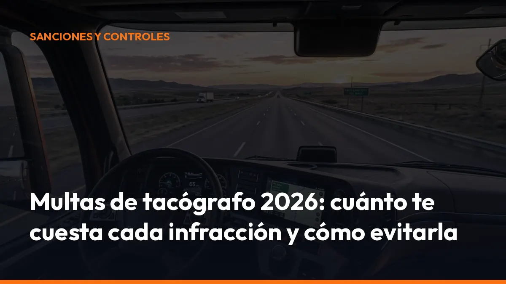

Multas de tacógrafo 2026: cuánto te cuesta cada infracción y cómo evitarla

En 2026, además, la obligación se amplía. Desde el 1 de julio de 2026, los vehículos de mercancías con una MMA superior a 2,5 toneladas que realicen transporte internacional o cabotaje deben utilizar tacógrafo, salvo que se encuentren dentro de una exención legal.
La buena noticia es que puedes evitar la mayoría de las multas de tacógrafo con un control sencillo, descargas periódicas y una gestión documental ordenada.
¿Cuánto cuesta una multa de tacógrafo en España?
No existe una única multa para todas las infracciones. La cuantía depende de la conducta, su gravedad, los datos disponibles y si existe reincidencia.
El régimen sancionador de la Ley 16/1987, de Ordenación de los Transportes Terrestres, establece diferentes tramos:
- Infracciones leves: pueden comenzar en 100 o 201 euros, según el tipo de incumplimiento.
- Infracciones graves: normalmente entre 401 y 2.000 euros.
- Infracciones muy graves: entre 4.001 y 6.000 euros.
- Reincidencia en determinadas infracciones muy graves: entre 6.001 y 18.000 euros.
Por eso, cuando buscas información sobre sanciones de tacógrafo, debes distinguir entre una incidencia leve, un incumplimiento de gestión de datos, una infracción de tiempos de conducción o una manipulación. Importante: circula la cifra de 20.001 euros para determinadas conductas relacionadas con el tacógrafo. Sin embargo, en el régimen administrativo de la LOTT consultado, la manipulación aparece sancionada con hasta 6.000 euros, o hasta 18.000 euros en determinados supuestos de reincidencia. Revisa siempre el expediente concreto y la norma vigente.
1. No descargar los datos del tacógrafo en plazo
La empresa debe descargar, conservar y poder presentar los datos del tacógrafo cuando la Administración los solicite.
Los plazos habituales son:
- Tarjeta del conductor: descarga cada 28 días en los tacógrafos de primera generación.
- Tarjeta del conductor con tacógrafo G2V2: el plazo puede llegar a 56 días, según el equipo instalado.
- Unidad del vehículo: descarga al menos cada 90 días.
- Conservación: guarda los archivos durante el periodo legal exigible y asegúrate de que pueden abrirse y analizarse.
No descargar los datos dentro del plazo puede generar una sanción. La cuantía depende de lo ocurrido:
- Retraso o incumplimiento administrativo: normalmente se mueve en el tramo de las infracciones graves.
- Falta significativa de datos registrados: puede considerarse muy grave.
- Imposibilidad de aportar la información solicitada: la sanción puede aumentar y aplicarse por cada vehículo o conductor afectado.
En la práctica, las sanciones pueden encontrarse desde importes bajos en conductas leves hasta 6.000 euros en incumplimientos graves de control o conservación.
La clave es no esperar al último día. Programa las descargas y crea un archivo por vehículo, conductor y periodo.
Empieza a digitalizar tu documentación con Mi Carga.
2. Manipular el tacógrafo: la infracción más peligrosa
Manipular el tacógrafo para modificar los tiempos de conducción, descanso o actividad es una infracción muy grave.
La normativa incluye, entre otras conductas:
- Instalar un imán.
- Utilizar dispositivos electrónicos para alterar los registros.
- Modificar el sensor de movimiento.
- Alterar el software o los datos registrados.
- Utilizar elementos que cambien las mediciones del aparato.
- Colocar un sistema de manipulación aunque no esté funcionando en el momento del control.
La LOTT considera muy grave la manipulación del tacógrafo y la sanción administrativa puede situarse entre 4.001 y 6.000 euros.
Además, puedes enfrentarte a:
- Inmovilización inmediata del vehículo.
- Pérdida de honorabilidad del gestor de transporte.
- Suspensión o problemas con la autorización de transporte.
- Gastos de reparación, traslado y custodia.
- Responsabilidad penal si los hechos pueden constituir falsedad documental.
No manipules nunca el tacógrafo. Si detectas una anomalía, lleva el vehículo a un taller autorizado y conserva el justificante de la reparación.
3. Conducir sin insertar la tarjeta del conductor
Cuando estás obligado a utilizar tacógrafo, debes insertar tu tarjeta de conductor antes de comenzar la actividad.
No llevar la tarjeta insertada, utilizar la tarjeta de otra persona o mantener una tarjeta que ya no deberías utilizar puede considerarse una infracción muy grave.
La sanción puede situarse habitualmente entre 2.001 y 4.000 euros, aunque puede aumentar si existen indicios de fraude, manipulación o uso sistemático del vehículo sin registro.
También puede producirse:
- Inmovilización del vehículo.
- Pérdida de honorabilidad.
- Revisión completa de los registros anteriores.
- Responsabilidad de la empresa y del conductor.
Solo existen supuestos excepcionales para conducir sin tarjeta, como robo, pérdida, deterioro o funcionamiento defectuoso. En esos casos debes:
1. Justificar el motivo. 2. Solicitar el duplicado. 3. Realizar las impresiones obligatorias. 4. Anotar manualmente las actividades. 5. Conservar la denuncia o documentación acreditativa.
Conducir sin tarjeta “para ahorrar tiempo” o para ocultar un movimiento no es una solución. El tacógrafo registra eventos y la inspección puede detectar inconsistencias.
4. Exceder los tiempos de conducción y descanso
Los excesos de conducción y las reducciones de descanso son una de las causas más frecuentes de sanciones en transporte.
Como referencia general:
- La conducción diaria ordinaria es de 9 horas.
- Puede ampliarse a 10 horas, como máximo, dos veces por semana.
- La conducción semanal no debe superar 56 horas.
- En dos semanas consecutivas no debe superar 90 horas.
- Después de un máximo de 4 horas y 30 minutos de conducción, debes realizar una pausa de al menos 45 minutos, salvo que se divida conforme a la normativa.
- El descanso diario normal es de 11 horas, con las reducciones y fraccionamientos permitidos.
La cuantía depende del exceso. Un pequeño incumplimiento puede calificarse como leve o grave. Un exceso importante puede ser muy grave y alcanzar hasta 6.000 euros.
Además, si durante el control se detecta que debes continuar conduciendo sin haber cumplido la pausa o el descanso, el agente puede ordenar la inmovilización hasta que desaparezca el riesgo.
Planifica la ruta antes de salir. No apures el tiempo disponible hasta el último minuto. Un atasco, una espera en un muelle o una incidencia en frontera puede dejarte sin margen.
5. Nueva obligación desde el 1 de julio de 2026
Desde el 1 de julio de 2026, los vehículos comerciales ligeros con una masa máxima autorizada superior a 2,5 toneladas y hasta 3,5 toneladas deben llevar tacógrafo cuando realicen:
- Transporte internacional de mercancías.
- Operaciones de cabotaje.
- Actividades sujetas al Reglamento europeo de tiempos de conducción y descanso.
Esta obligación deriva del Paquete de Movilidad y del Reglamento (CE) 561/2006.
La Comisión Europea explica esta ampliación y confirma que estos vehículos deberán utilizar tacógrafo inteligente adecuado para la operación.
Si trabajas con una furgoneta de más de 2,5 toneladas y cruzas fronteras, no esperes a que llegue un control. Comprueba ahora:
- MMA del vehículo.
- Tipo de transporte que realizas.
- Tacógrafo instalado.
- Tarjeta del conductor.
- Formación sobre el uso del dispositivo.
- Sistema de descarga y conservación de datos.
6. Cómo evitar las multas de tacógrafo
Utiliza este checklist antes y después de cada ruta:
- Tarjeta insertada: comprueba que corresponde al conductor.
- Actividad correcta: selecciona conducción, otros trabajos, disponibilidad o descanso de forma adecuada.
- Descansos planificados: calcula el tiempo disponible antes de aceptar una nueva carga.
- Descargas controladas: registra las fechas de descarga de tarjeta y vehículo.
- Datos conservados: guarda los archivos en una ubicación segura y accesible.
- Fronteras registradas: introduce los símbolos de los países cuando sea obligatorio.
- Tacógrafo revisado: verifica calibración, precintos y funcionamiento.
- Documentación disponible: lleva a bordo los documentos exigidos.
- Incidencias justificadas: realiza impresiones y anotaciones manuales cuando proceda.
- Formación actualizada: asegúrate de que tú y tu equipo conocéis las reglas.
No dependas de notas sueltas, correos dispersos o carpetas difíciles de localizar. Centraliza tu documentación y tenla disponible desde el móvil.
Gestiona tu documentación de transporte sin complicaciones
Las multas de tacógrafo no siempre se producen por una conducta intencionada. Muchas aparecen por olvidar una descarga, perder un archivo o no poder presentar un documento durante una inspección.
Con Mi Carga puedes generar y gestionar documentación digital para tus transportes desde el móvil. Tienes:
- Disponibilidad inmediata: accede a tus documentos desde cualquier lugar.
- Gestión sencilla: reduce papeles y búsquedas innecesarias.
- Trazabilidad: conserva la información de cada operación.
- Modo sin conexión: trabaja también cuando no tienes cobertura.
- Sin límite de portes: utiliza el servicio según tus necesidades.
Puedes empezar con 10 portes de prueba, que no caducan ni se pierden si te suscribes antes de utilizarlos. Después, elige el plan que mejor encaje contigo:
10 € al mes + IVA
o
90 € al año + IVA
Activa tu cuenta desde la página de suscripción de Mi Carga, entra con tu correo y comienza directamente.
Preguntas frecuentes sobre sanciones de tacógrafo
¿Cuánto es la multa por no descargar la tarjeta del tacógrafo?
Depende de la gravedad y de los datos que falten. Una incidencia de gestión puede encuadrarse en una infracción grave, mientras que la falta significativa de registros puede alcanzar los tramos de las muy graves. La multa puede ir desde importes bajos hasta 6.000 euros.
¿Cuánto es la multa por manipular el tacógrafo?
La manipulación se considera una infracción muy grave. La sanción administrativa puede ser de 4.001 a 6.000 euros y, en determinados casos de reincidencia, puede alcanzar entre 6.001 y 18.000 euros. También puede implicar inmovilización y pérdida de honorabilidad.
¿Qué ocurre si conduzco sin tarjeta?
Si la tarjeta era obligatoria y no la llevas insertada, puedes recibir una sanción grave o muy grave. En transporte pesado, el importe habitual parte de 2.001 euros y puede aumentar si existe fraude o manipulación.
¿Desde cuándo es obligatorio el tacógrafo en furgonetas de más de 2,5
toneladas?
Desde el 1 de julio de 2026, cuando realizan transporte internacional o cabotaje, salvo que resulte aplicable una exención.
No esperes al próximo control. Revisa hoy tus descargas, tus tarjetas y la documentación de tus vehículos. Activa Mi Carga, prueba los 10 portes y empieza a trabajar con tus documentos disponibles al instante. ¿Hablamos?
Genera tus 10 primeros documentos gratis con Mi Carga
DeCA, carta de porte y ADR, en PDF, con QR y archivo automático en la nube.
Empezar con 10 documentos gratisArtículo informativo. Consulta siempre el caso concreto de tu operación. ¿Dudas? Escríbenos.